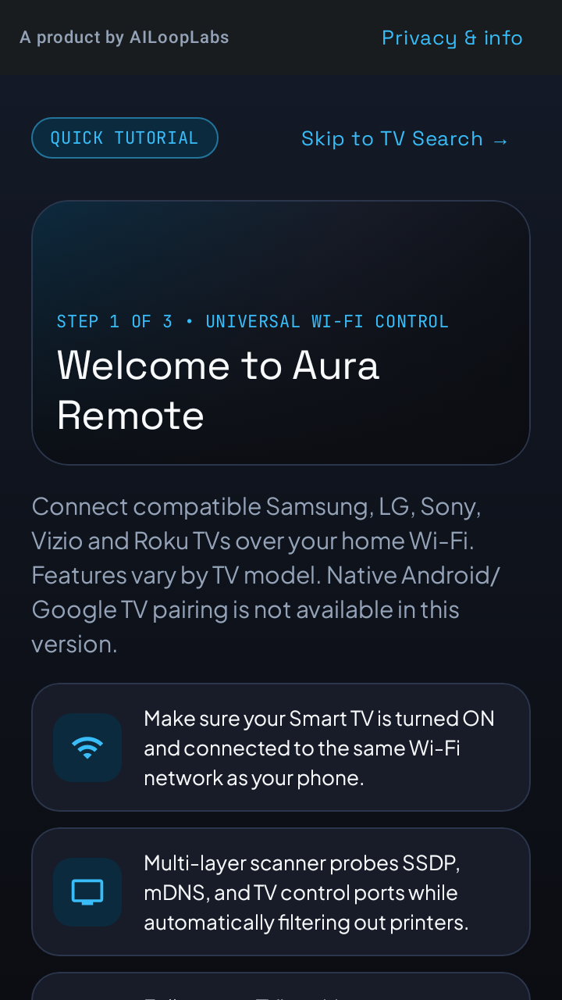
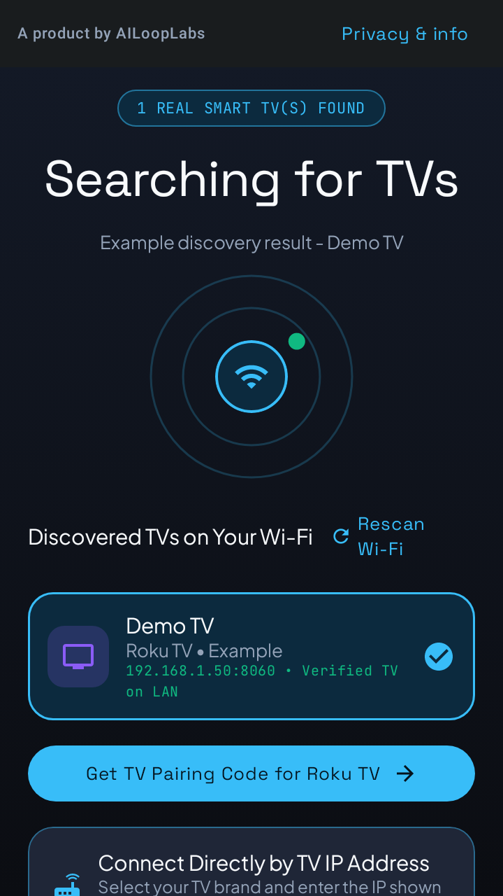
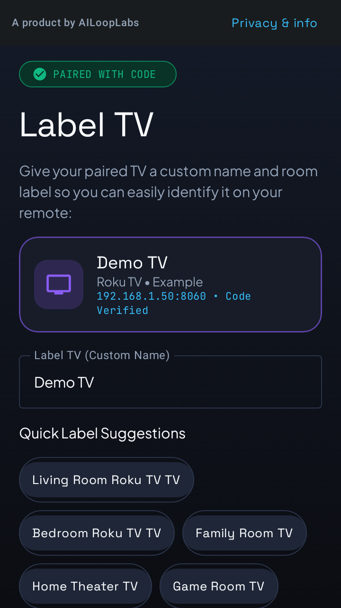
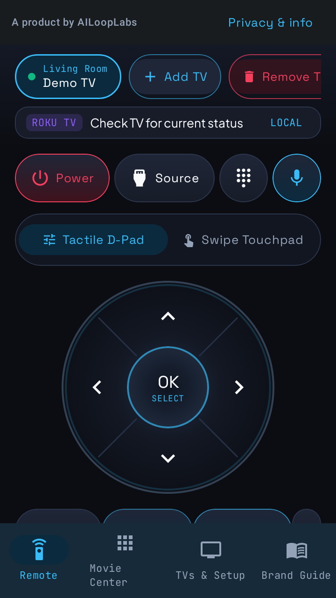
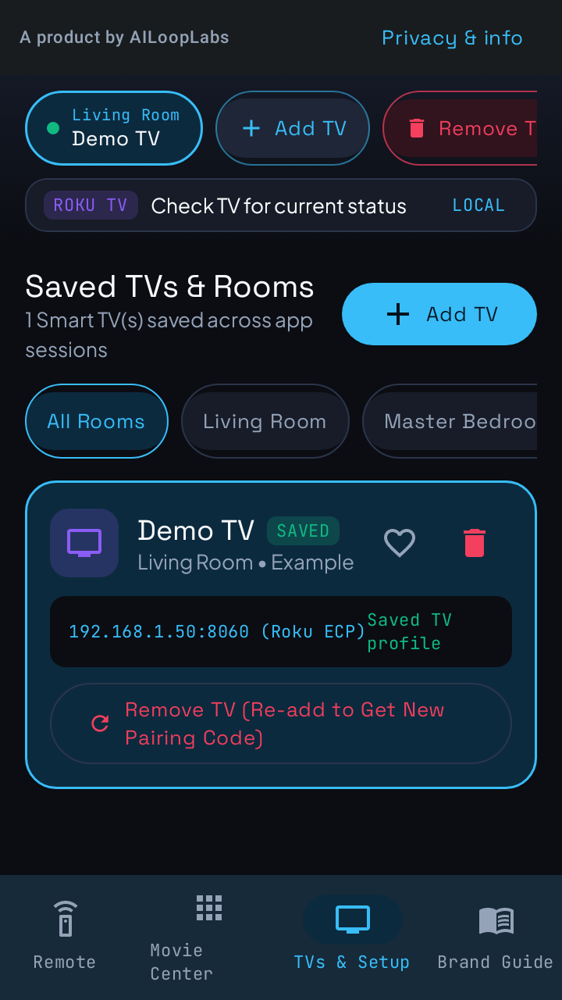
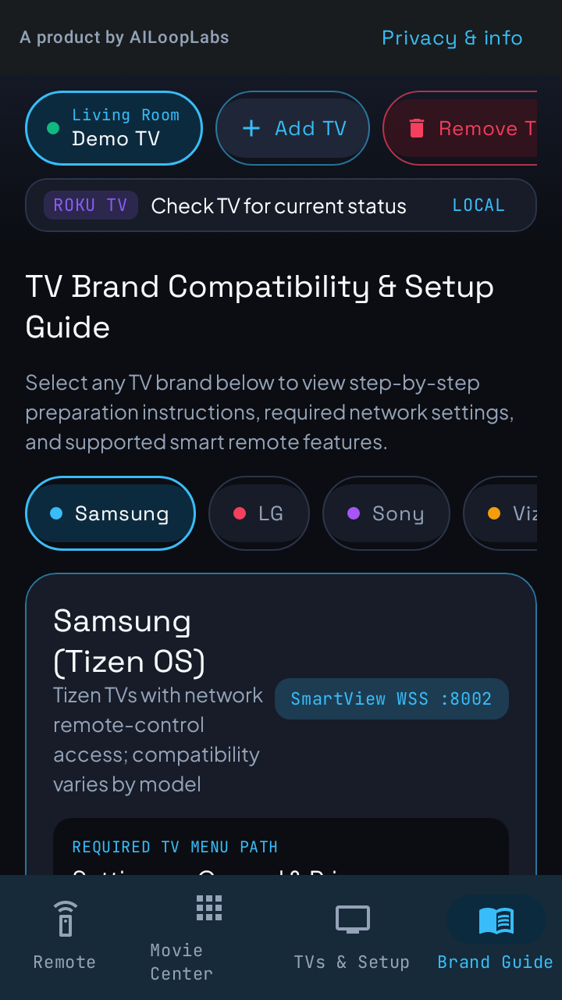

The Aura video guide
From first connection
to familiar controls.
Follow the quick start for your first TV, or explore the complete manual at your own pace. Both videos include English synthetic narration and captions, with chapters and an on-page transcript.
A product by AILoopLabs · Guide for Aura 1.0.2 (4)
Labeled examples, actual app UI. These narrated walkthroughs and screenshots show example Aura app states, not physical TV recordings. TV-side prompts are illustrative. A discovery result or command message is not proof of a successful connection: check every result on your actual TV. Features and pairing vary by model.
Your first TV
Quick start
Connect to the same network, discover a TV, follow its authorization flow, save a name and try the remote.
The video could not be loaded. Try the MP4 download below, or follow the written setup.
Follow the quick start
- Turn on your TV and connect it and your Android phone to the same trusted private network.
- Start discovery, identify your TV, and follow Aura’s instructions for that brand.
- Approve control on the TV or enter a code only if its pairing flow requests one.
- Name and save the TV, open the remote, and check a simple navigation command on the TV.
Need more detail? Follow the written setup below.
Choose a chapter to move the player to that moment. Press Play when you’re ready.
Read the English quick-start transcript
The complete walkthrough
Full manual
Explore setup and pairing differences, remote and touchpad controls, Movie Center, optional voice, saved TVs, the Brand Guide and troubleshooting.
The video could not be loaded. Try the MP4 download below, or follow the written guide.
Explore the full manual
- Setup: start with the network and TV authorization steps in the written setup.
- Controls: use the remote or touchpad, then check the result on the selected TV. Features vary by model.
- Text and voice: typed input can be used without microphone permission. Optional voice recognition may use your Android speech provider’s servers.
- Saved TVs: name TVs and rooms, check the selected device, and remove a profile if you need to pair again.
- Help: use Aura’s Brand Guide and the troubleshooting answers below.
Choose a chapter to move the player to that moment. Press Play when you’re ready.
Read the English full-manual transcript
Keep these steps beside you
Set up your first TV.
These written instructions work on their own. Keep the original remote handy to approve access and check the result on your TV.
Check the TV platform
Aura implements Samsung, LG, Sony, Vizio and Roku local-control protocols. Model, firmware and TV settings affect compatibility. Native Android/Google TV pairing is unsupported in this version. Start with the in-app Brand Guide.
Join the same trusted private network
Turn on the TV and connect your phone to the same network. Guest or isolated Wi-Fi can block discovery and control. Enable local remote control in the TV’s settings if required by that model.
Discover the TV, or follow manual connection
Start the search in Aura and select the TV you recognize. If it is not found, check the TV’s current network address in its settings and follow Aura’s manual connection flow for that brand. Enter only the address of your own TV.
Follow the brand’s authorization instructions
Samsung may show a TV approval request. LG, Sony and Vizio have their own authorization paths; follow the instructions shown for your model. For Roku, check local network control settings and follow Aura’s Roku flow; do not invent a PIN. Enter a code only when the TV’s actual pairing flow requests it.
Give the TV a name and room
Save a recognizable label, then open the remote. Before sending commands, make sure the intended TV is selected. Example names in this guide do not indicate a real connected device.
Test a simple control on the TV
Try navigation and OK, then Back or Home where supported. Watch the TV for the response. Try other features individually: a successful app-side request does not establish that the TV performed it.
Movie Center, app shortcuts and searches send requests to supported TVs. Aura does not supply content. TV providers and streaming services may require their own accounts, subscriptions or payments.
See the app up close
Every screen has a place.
Explore actual Aura UI in labeled example app states. Select a screenshot to enlarge it, then use Previous and Next or the keyboard’s left and right keys. Press Escape to close.


Welcome
Start the first-use walkthrough.


Discover a TV
Identify the TV you want to control.


Name your TV
Choose a label and room.


Remote
Try a control and watch the TV.

Touchpad
Explore supported gestures.

Movie Center
Check requests on the TV itself.


Saved TVs
Select the right TV and room.


Brand Guide
Check the instructions for your model.
All screenshots show example app states. TV prompts are illustrative. These images do not establish physical-TV pairing or successful control.
When something needs a second look
Check the TV, then the connection.
The TV doesn’t appear in discovery.
Check that the TV is powered on and the phone and TV are on the same private network. Guest Wi-Fi or device isolation may prevent discovery. Check the TV’s network-control settings and the in-app Brand Guide. If supported for your TV, use the manual connection flow with its current local address.
The TV appears, but pairing fails.
Use the actual TV’s approval prompt and brand-specific settings. A listed TV is not yet a confirmed connection. If needed, revoke the old authorization in TV settings, remove its saved Aura profile and follow pairing again. Native Android/Google TV pairing is unsupported.
A button, search or app shortcut has no effect.
Confirm that the correct TV is selected, is on and remains reachable on the network. Check the TV itself for the result or an authorization prompt. Controls and shortcuts vary by model and firmware. An app-side request or status message does not guarantee the action happened.
Do I have to enable voice?
No. Buttons and typed input work without microphone permission. Voice is optional. Aura prefers on-device recognition when available; otherwise your Android speech provider may send audio to its servers. AILoopLabs does not receive the audio. You can revoke microphone permission in Android settings. Read the Aura privacy policy for details.
How do I remove a saved TV?
Remove its profile in Aura to delete the saved TV information and pairing credentials from the app. You can also revoke Aura’s authorization in the TV’s settings. Clearing Android app storage or uninstalling removes remaining local app data.
Is all TV traffic encrypted?
No. Aura uses the local-control protocol supported by the TV. Some TV connections use unencrypted HTTP or WebSocket, while others use TLS. Use a trusted private network. See the public privacy policy for product-specific data practices.
Aura TV Remote
A little help goes a long way.
Aura is free, with no Aura ads, Aura account or in-app purchases. TV providers and streaming services may have their own account and payment requirements.
Release submitted — public listing pending.
Tell us where you got stuck.
Email ailooplabs.pro@gmail.com with your TV brand and model, Android version and the step you tried. Leave out pairing codes and private information.
Guide for Aura 1.0.2 (4) · November 19, 2026
Example app states, with illustrative TV prompts.